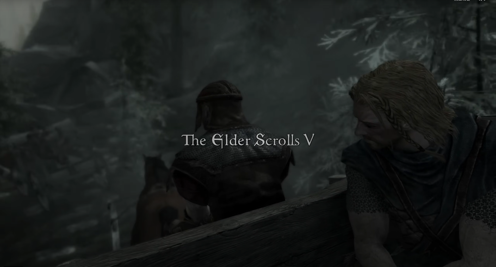
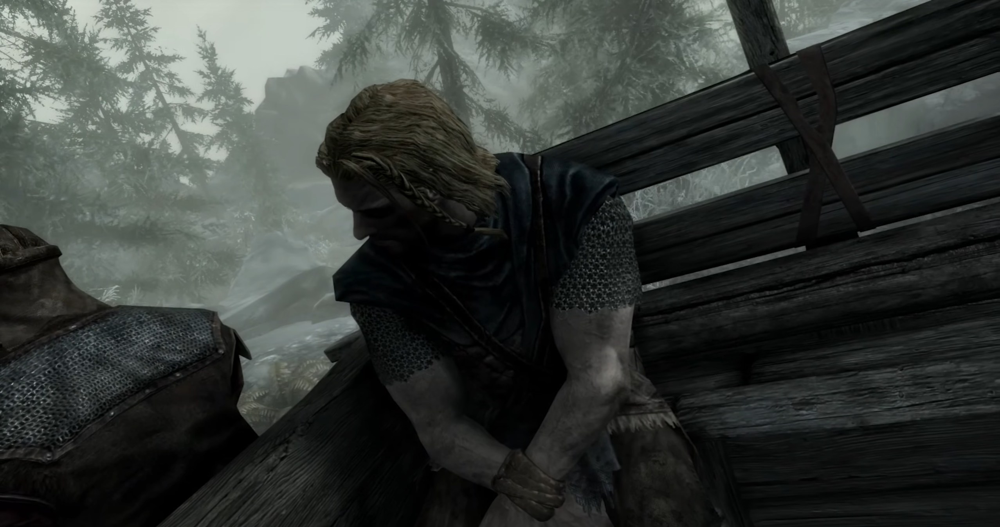
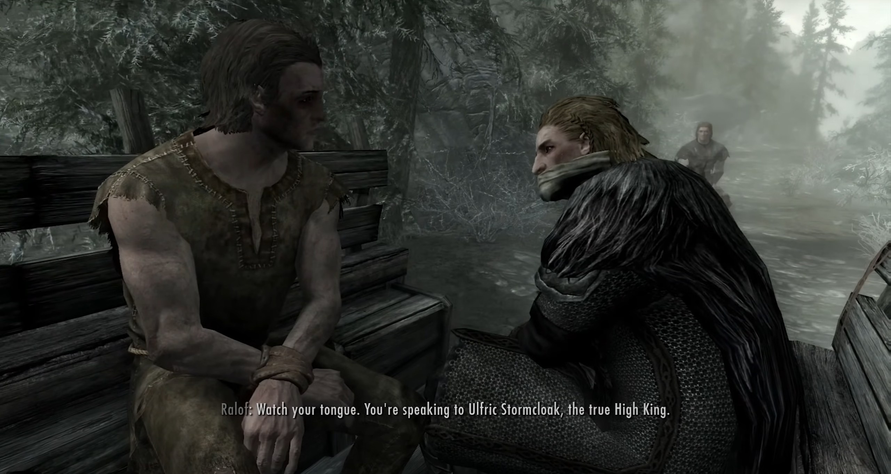
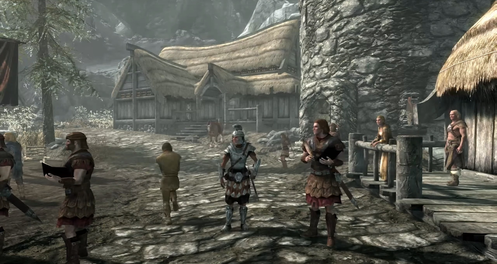
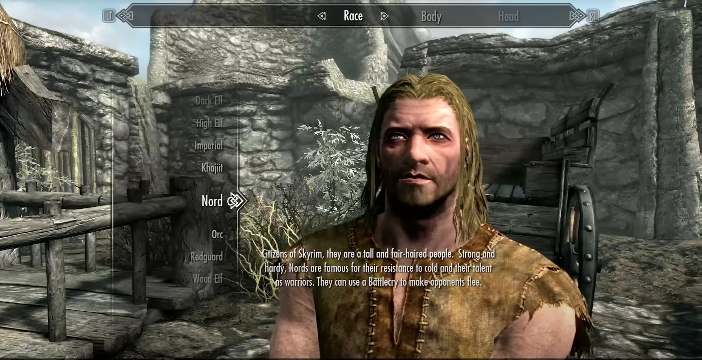
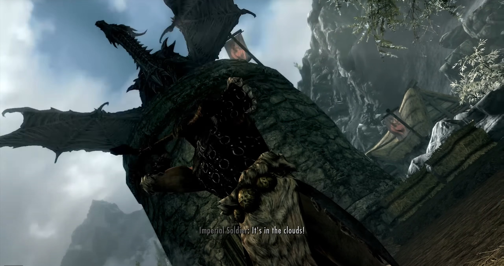

Main Story: Prologue

The wheels rolled, and the protagonist, his hands bound, sat in a carriage, being escorted by Imperial soldiers to the Helgen.
With him was a young man named Ralof, a member of the rebellious Stormcloaks. There was also a petty horse thief named Lockir, who kept complaining that his arrest was due to Ralof's involvement.

The third was the silent Ulfric, rumored to be the High King of the Stormcloaks, Lord of Windhelm, and leader of the rebellion.
Ralof sensed a grim premonition; it seemed Valhalla was awaiting their return. Locker was horrified upon hearing this, and he pleaded with the gods.

When the carriage reached Helgen, the prisoners disembarked and were called out by the imperial soldier Hadvar.
Knowing his impending death, the horse thief Lockir attempted to escape but was struck by an arrow through the heart, resulting in his premature death.

Click on the protagonist. Soldier Hadvar says you're not on the list and asks who you are.
At this point, set the protagonist's race, appearance, and name.
After completing the setup, the Imperial Captain says there's nothing to worry about; just join the execution.

Next, they witness a Stormcloak warrior's heroic death.
The protagonist's turn arrives, and they approach the guillotine. As the executioner raises his axe, they see a giant dragon descend upon a nearby tower, causing a violent tremor.
The dragon breathes fire below, throwing the Imperial army into disarray, allowing the protagonist to escape unharmed.

Introduction to The Elder Scrolls V: Skyrim
The Elder Scrolls V: Skyrim is a 2011 action role-playing game developed by Bethesda Game Studios and published by Bethesda Softworks. It is the fifth main installment in The Elder Scrolls series, following The Elder Scrolls IV: Oblivion (2006), and was released worldwide for Windows, PlayStation 3, and Xbox 360 on November 11, 2011. Skyrim was developed using the Creation Engine, which was rebuilt specifically for the game. The team opted for a unique and more diverse open world than Oblivion's Imperial Province of Cyrodiil, which game director and executive producer Todd Howard considered less interesting by comparison.
The game is set 200 years after the events of Oblivion and takes place in Skyrim, the northernmost province of Tamriel, a continent on the planet Nirn. Its main story focuses on the player character, the Dragonborn, on their quest to defeat Alduin the World-Eater, a dragon prophesied to destroy the world. Throughout the game, the player completes quests and develops the character by improving skills. The game continues the open world tradition of its predecessors by allowing the player to travel to discovered locations in the game world at any time, and to ignore or postpone the main storyline indefinitely.
Upon release, the game received critical acclaim, with praise for its character advancement, world design, visuals, and the ability to dual-wield in combat. Criticism targeted the melee combat, dragon battles, and numerous technical issues present at launch. The game shipped over seven million units within the first week of its release and had sold over 20 million units by June 2013. It is considered one of the greatest video games ever made and credited as influencing later fantasy and open world games.
Three downloadable content (DLC) add-ons were released: Dawnguard, Hearthfire and Dragonborn, which were bundled along with the base game into the "Legendary Edition" released in June 2013. A remastered version subtitled Special Edition, containing all three DLC add-ons along with a graphical upgrade, was released in October 2016; a port for the Nintendo Switch was released in November 2017 alongside a separate virtual reality-only version titled Skyrim VR. In addition, the remastered version was bundled with additional Creation Club content and released as the "Anniversary Edition" in 2021–22. sequel, The Elder Scrolls VI, is currently in development.